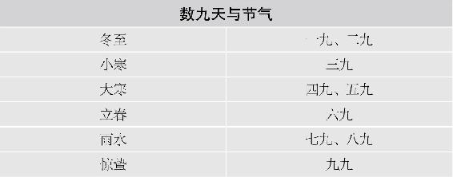
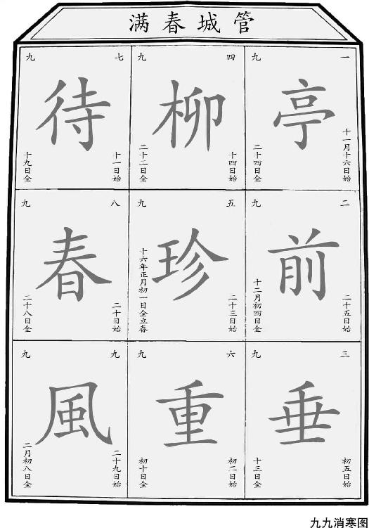
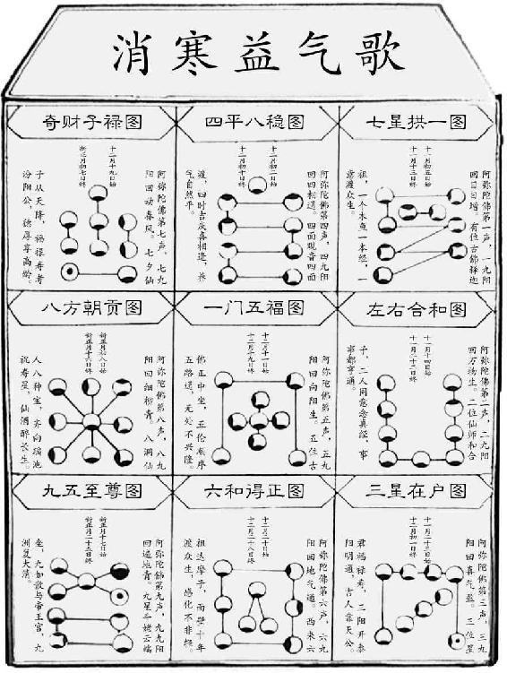

9.仲冬“畅月”，最宜大补
一年中，最适合大补的时节在冬天的第二个月，也就是仲冬，从大雪开始，到小寒的前一天结束。古人将这个月称为“畅月”，就是“充实之月”，万物收藏积聚，充实于内。我们也要通过大补来充实自己的身体。
说到大补，有些朋友是不是眼睛都发亮了呢？确实，大家都喜欢补，很多人更变着法儿地进补，觉得多吃补品总有好处。
其实，进补是补漏洞！补薄弱环节！要补在应该补的地方，在应该补的时间补。补错了，就像在新衣服上打补丁，或是夏天把窗户缝糊得密不透风，越补越难受。
什么时间可以痛痛快快地大补身体呢？就在仲冬这个月。这是一年一度大补的好时机。特别对老年朋友来说更是如此。儿女孝敬给您的昂贵补品，在这个月最有机会给用掉。
在仲冬这个月该如何大补呢？首先是五脏同补，其次是加强补心肾。因为心肾在五脏中，最能受补。
具体地说，仲冬大补有两个重点：一是补肾精，二是养心阳。
仲冬有两个节气：大雪和冬至。大雪节气，是仲冬的前半月，我们重点补肾精。到了冬至节气，是仲冬的后半月，我们重点养心阳。
10.仲冬时节，要多待在安静的气场里
仲冬时节，我们顺应天时进行封藏养生，除了大补固肾之外，还要注意避免精气外泄。在上古时代，这个月是不让大兴土木的，不做劳民伤财的事，不称职的官员统统免职，没有用的器物统统丢弃，为的就是创造一个安静的气场，不干扰天地人三者的封藏。
我们现代人应该怎么做呢？简单说，在仲冬时节宜安静，不宜急躁，可以在家读读书，清理一下杂物，家里环境清净了，我们的心也更容易感觉清净；宜静养，舒缓地锻炼，不宜剧烈运动，特别是不要累到满头大汗，一出汗，气就外泄，就达不到封藏的目的了。
大雪，每年12月的7日或8日进入大雪节气，可以痛痛快快地开始大补身体，主要以补肾精为主，但要注意进补是补漏洞，补薄弱环节。另外，还要避免精气外泄。宜静养，舒缓地锻炼；不宜剧烈运动，特别是不要累到满头大汗。
11.大雪时节的食方：大补养藏汤
12月的7日或8日进入大雪节气，怎样大补呢？我们来把小雪时喝的补肾养藏汤加点料，变成大补养藏汤。首先加入一把葡萄干，血虚的人，还可以再加一些桂圆。如果怕吃桂圆上火，可以用整颗的桂圆，不去壳一起煮。
大补养藏汤
原料：生栗子6 个、生核桃6 个、莲子6 个、枸杞1 把、葡萄干1 把、陈皮1/4 ~ 1/2 个（根据大小而定）。
做法：
① 莲子用水泡1~2 小时。
② 生栗子剥去外壳，但不要去掉内皮，切成两半。
③ 生核桃剥去外壳，核桃仁的外皮则留下，掰开。
④ 将所有原料一起下锅加水煮开后再煮20 ~ 40 分钟起锅。
⑤ 此时栗子的内皮已经被煮到和栗子仁分离了，将它们用筷子捞出来扔掉。
⑥ 可以在汤中加少量糖调味，喝汤，将栗子、核桃和枸杞吃掉。
功效：固肾，补五脏。

赵冬梅：陈老师您好，我煮出来的大补养藏汤，就是像您说的那样有苦涩味。我加了红糖调味，味道很好。自从喝了这个汤，每年冬天一到手脚冰凉的毛病也好了。
吉祥三宝：陈老师您好，我煮的大补汤有点涩味，喝时放点红糖，我们一家人都爱喝。我的后脚跟有死皮，现在好多了。每天掉的头发也少了，膝盖也不疼了。
double：喝了冬天大补养藏汤，腰没那么疼了，起夜也少了。
Ling：补肾养藏汤和大补养藏汤都很好喝，里面的食材都是我很喜欢吃的，感觉平时的小零食给一起煮了！喝汤，吃掉里面的栗子、核桃、莲子、葡萄干、枸杞，感觉身体充满能量！老师书中大部分食方的食材都很容易买到，做起来也不费劲，我会努力坚持跟着顺时养生的！
笨笨熊：大雪时节的食方—大补养藏汤，每年这个时节来吃，感觉对身体特别好。之前，我大便一直不成形，也不知道是什么原因，后来跟着老师的养生来吃，吃了一段时间，突然发现好了，就是大补养藏汤起到了作用。跟着老师食方来吃，有时候身体会收到意想不到的效果。
顺时生活会29群读者：吃完早饭准备煮大补养藏汤，上周喝过一次了，比补肾养藏汤好喝，甜而不涩，全身暖和起来了，腰酸的感觉已经没了！

问：我最近一直按照您这个食方煮着喝，但不知月经期间能喝吗？
允斌答：可以，但枸杞少用或不用。
问：这个配方如果熬成粥可以吗？
允斌答：完全可以。
12.冬季脚后跟开裂（肾虚），要多喝“大补养藏汤”
每年入冬，很多人就会增添一个烦恼：脚后跟开裂。严重的裂开一个血口子，很疼。
对付这种开裂，擦润肤霜并不怎么太管用。这是因为，天气的寒冷干燥只是诱发因素，真正的病根在于肾虚。脚后跟反映了肾的健康状况。肾虚不能给脚后跟的皮肤提供足够的营养润泽，自然就开裂了。
有这种困扰的朋友，多喝这道大补养藏汤，会有帮助。
13.冬季脚后跟已经裂口子了，怎么急救呢
我们来准备两样原料：醋、香蕉皮。
买两斤（1 000克）陈醋或香醋，每天晚上，把醋煮热，用来泡脚。泡十多分钟就可以。然后刮下香蕉皮内侧的白色部分，敷在脚后跟上，用胶布固定住。每天像这样泡一次脚，换一次香蕉皮，过几天，裂口就收了。
14.冬季补肾的食方：每天吃几颗风干板栗，补肾壮骨
人年纪大了容易有腰腿酸软乏力的毛病，这是人老体衰的结果。这样的虚证用药物效果不佳，需要慢慢地食养。中医有一个传统的食养古方，对老年腰腿病效果不错。这个古方就是吃风干的板栗，每天七颗。
唐代有一个大医家叫孙思邈，后世把他尊为“药王”。他说过一句话：栗为肾之果，意思是栗子补肾效果非常好。
板栗怎么风干？您可以用一个网兜把新鲜的生板栗给兜起来，挂在家里通风的地方，比如阳台上。过个十来二十天，就风干了。
风干的栗子，里面的栗子仁缩小了，更容易剥壳，这时候的栗子仁，说是干又没有完全干，表皮蔫蔫的有些发皱，吃起来别有风味。
补肾食方：每天吃风干板栗
请告诉家里的老人，这个风干栗子最好每天一早一晚空腹生吃。不能狼吞虎咽地吃，干栗子仁是有点儿硬的，要慢慢地嚼，最好嚼36下，在嘴里把它嚼得碎碎的，然后连着唾液一起，慢慢地分三口咽下去。
每天吃多少合适呢？7 ~ 10颗的样子，根据个人的消化能力而定，以吃后不感觉腹胀为度。
肾主骨，补肾就是补到了我们的骨头。中医认为，所有的种子都入肾经，可有的是泻，而栗子是专补不泻。
板栗的生熟也有讲究。生板栗，和煮熟或炒熟的板栗功效有些许区别。熟板栗脾肾兼补，偏于补气，老人经常腹泻，吃熟板栗可以调理。生板栗偏于补骨，治腰腿病或是预防牙齿松动，吃生的效果才好。

姚真问：老师，现在还能吃生栗子吗？我听您音频课上说，肾阴虚脚后跟痛，早晚各吃7粒。我吃了好多了，不知道还可以吃下去吗？
允斌答： 如果调理脚后跟痛，还可以继续吃。
冬至，如果创立一个养生日历，那么它的第一天应当从冬至开始。冬至日虽然是在每年12月的21日到23日，却是一年养生的元点。此时进补，以补阳补气为主，有平时的三倍之功。
另外，冬季是心源性猝死的高发季节，冬至前后更是高危时段。在阳气初生的这段时间，我们一定要好好养护心阳。
15.“庭前杨柳，珍重待春风”：冬至时节，进补三倍功
如果创立一个养生日历，那么它的第一天应当从冬至开始。冬至日虽然是在每年12月的21日到23日，却是一年养生的元点。
气自冬至始。冬至是冬天到极点之时，这时天地一片萧瑟。看似没有生机，其实阳气马上要开始萌芽，所以这是天地阴阳转换的关键节点。此时进补，有平时的三倍之功。
冬至日当天进补，以补阳补气为主。
传统习俗，冬至是全家团聚的大节日，一定要回家吃饭，而且要吃滋补的食物。南方习俗冬至早上全家吃汤圆，是从一大早就开始补了。其实这一天，三顿都可以补。吃汤圆，吃饺子，还要吃羊肉。
至少在6 500年前，我们的祖先就测定了这个意义重大的节气。冬至的重要意义可以用八个字概括：否极泰来，一阳复始。
一阳复始的“复”字，含义很深刻。在《易经》中，有一个“复”卦。古人用此卦来形容冬至。“复”有“返”的意思。物极必反，终点即是下一个循环的起点。
如果我们把一年看成一天，那么冬至就是一天的终点和起点，也就是子夜12点／0点。子夜时阴气最强，冬至时也同样，因为这一天阳光照耀南回归线，是太阳离北半球最远的一天，因而阴气达到顶点，阳气达到最低点。接下来太阳直射点一天天往北回归，阳气就一天天增长了。所以说，复，即是回归，是颠覆，也是复生。冬至时节，最宜反观自省，改变以往不健康的生活习惯，一切重新开始。
冬至时，阴气最盛，而阳气归零，是我们察病的好时机。如果身体某处功能比较虚弱，冬至前后的反应就会比平时明显。此时身体哪里不舒服，往往是那里的阳气不足。冬至前后，可以注意观察身体有什么反应。特别是冬至当晚，建议你早早上床，安静平躺，好好感受一下全身各处的状况。
在这个时间段，有的人会感到腰痛或是膝盖发冷，有的人会发现自己的小腿比较容易浮肿，有的人总拉肚子，这都是阳虚的信号。
更多的朋友还会有这样的体会，就是睡眠似乎变差了。有些朋友平时睡眠还可以，但冬至这几天就是感觉比平常难以入睡，特别是每到夜半时分。这也是阳虚，并且是心阳虚。
心阳不足，心脏功能变弱，直接影响睡眠。心主管我们的睡眠，若心得不到足够的滋养，心神不能安定，就无法入睡。
16.冬至时节的食方：冬至补心养阳汤
如果把人体比作一个国家，心就是这个国家的国王。国王弱，五脏六腑这些大臣都跟着变弱，甚至有“亡国”的危险。冬季是心源性猝死的高发季节，冬至前后更是高危时段。蛇年冬至节气期间，一位全国知名的企业精英就因为心梗突然去世，年仅47岁，多令人惋惜。
冬至后，人体心阳最弱，更容易出现问题。在阳气初生的这段时间，我们要好好养护心阳，可以喝一道补心养阳汤。
冬至补心养阳汤
（注：素食的朋友，可以去掉此方中的羊肉，买一个榴梿，用榴梿壳内的白色部分和榴梿核来煲冬至养心汤。）
原料：羊肉1~2斤（500克~1 000克）、黄芪100克、当归（全归）20克、甘蔗2~4节、带皮生姜2块、大枣8个（这是一家人喝的量）。
调料（后放）：黄酒1两（50克），香菜1两（50克），胡椒粉、盐、辣椒粉（怕辣可不用）少许。
做法：
① 黄芪、当归用清水浸泡30分钟。
② 香菜切成末，甘蔗去皮后，纵向剖开，带皮生姜拍扁。
③ 锅内烧开水，将羊肉下锅煮出血沫，将水倒掉，羊肉冲洗干净。
④ 锅内重新加水，将全部原料一起下锅，大火煮开后，放黄酒，转中火炖1个小时。
⑤ 放入胡椒粉，关火起锅。
⑥ 在汤碗里放入香菜末和少许盐，将羊肉汤盛入汤碗。
⑦ 将锅里的羊肉捞出，切成块，配盐和辣椒粉混合做成的蘸料食用。
允斌叮嘱
① 盐不可下锅。没有喝完的羊肉汤里不要放盐，下顿热过之后，喝时再放盐调味。
② 湿气重的人可以放十几粒花椒一起炖。
③ 切记：感冒时，汤里不能放黄芪。
④ 没有甘蔗可以放牛蒡，也能平衡羊肉的燥热。但甘蔗在这道汤中起到多种作用，特别是对于心脾的保健，实在是妙不可言，而且无可替代。
⑤ 有没有前两天晚上睡眠不如平时好的朋友？特别是这几天的夜半时分，如果感觉比平常难以入睡，很可能是心阳不足，是心脏功能变弱的信号，需要好好调理了。补心汤很适合你来喝。
⑥ 补心汤对一般人都适用，小孩、年轻人只要不是特别燥热体质都可以喝（感冒发烧暂停）。
⑦ 黄芪和当归的剂量可以根据自己家的人数和体质适当调整，只要保持5：1的比例就好。之前讲过，这是补血的黄金比例。
⑧ 生姜在这道汤里不仅能去除腥味，它和大枣一起搭档，还有调和脾胃的作用，是这道汤不可或缺的配角。
⑨ 冬至补心养阳汤是大补的，怕自己虚不受补的人可以提前一两天先用2根葱白、3片带皮生姜、1/2~1个萝卜的皮煮汤喝下，散散表邪，为进补补心养阳汤做好准备。
冬至将冬三月分为两半，前一半，我们以补精气为主，以肾为重点；后一半，我们以补血气为主，补肾之外，增加补心。心主阳，一阳复生，就要从“心”开始。
董佳的日记本：我昨天用高压锅煮了羊肉汤，很香。甘蔗与生姜放多了，虽然如此，我昨天晚上睡了8个小时（长期失眠），可能第一次吃效果特别好。谢谢！
UFO图片 看起来像画盘：晚上手脚冰冷，喝完这个汤，晚上特别暖和。再也不用睡觉缩成一团了。
小凤18963954484：冬至的补心养阳汤，气血都补，喝完眼睛明亮，皮肤紧致红润。
漂亮妈妈：补心养阳汤简直就是我们全家人的最爱！现在的我精神好、心情好、睡眠质量好，以前这些都不太好！
艾咪：我从不吃羊肉的，这个方子没有羊肉膻味，甜甜的，味道很鲜美，身体越来越好，收益很大！
法图麦&杨：作为一个穆斯林，对羊肉是来者不拒的。尤其是陈老师的这道食方，更是将羊肉的功效与美味推向极致，我怎么可能不喜欢不接受。羊肉美味，汤汁香甜微辣，甘蔗解腻，黄芪补气……整个料理，取长补短，相辅相成。食时酣畅淋漓，食后周身融暖，又回味无穷。
慧：连续两年冬天跑步，后来觉得膝盖疼，有点类似于水肿。2018年秋天接触陈老师，冬天喝了养阳汤，春节后尝试跑步，没有出现膝盖疼痛的情况，大爱陈老师！
兰兰：冬至前几天，噩梦连连，半夜惊醒后就再难入睡。喝了一次养阳汤，冬至当晚没噩梦，一觉睡到早上6点半，见效太快了，感谢陈老师！
绿爱：冬至喝了补心养阳汤，甘蔗和羊肉搭配太好喝了。大冷天别人都说太冷，我却觉得身上暖暖的，而且牙龈出血、鼻子不通的毛病也都好了！以后跟着老师好好学养生，感恩老师！
DongDong问：陈老师，泡当归黄芪的水要留着一起炖吗？
允斌答：如果药材干净的话可以。
范范问：这道养阳汤就在冬至这天喝吗？冬至之后不能再喝了吗？
允斌答：一个节气15天。
17.为什么炖“冬至补心养阳汤”要放甘蔗呢
炖羊肉汤时，人们习惯上是放点萝卜。为什么这道补心养阳羊肉汤里要放甘蔗呢？因为放甘蔗有萝卜所代替不了的妙处。
萝卜和甘蔗都能平衡羊肉的燥性。阴虚火旺、内热重的人吃多了羊肉容易上火。加甘蔗或萝卜进去，可以平衡一下，适用的人群更广。
但萝卜是下气的，会影响黄芪补气的效果，而甘蔗就不会。甘蔗是脾之果，养脾又养胃，能清胃热，又能够补血，可以增强这道汤的补心效果。

问：补心养阳汤里的这个当归是全归还是归头啊？
允斌答：当说到当归时，没有特别注明就是指全归。
问：买不到甘蔗，可以用萝卜代替吗？
允斌答：萝卜会影响黄芪的药效。买不到甘蔗，可以退而求其次，用牛蒡代替。
问：之前的补肾养藏汤还继续喝吗？
允斌答： 补肾汤整个冬季每周喝1 ~ 3次，补心养阳汤在冬至后7 ~ 14天内喝。
问：一次煮出两天的量应该没有问题吧？
允斌答：没问题的。
问：主要是喝汤吧？那就多放点水，煲一次喝两三次可以吗？
允斌答：可以的。
问：昨天喝了这个补心汤，第二天开始嗓子痛，并且带动右耳也有点痛，是不是补大了，上火了。现在该吃点什么灭火好呢？
允斌答：这种情况是有外感，汤里不应当放黄芪。可以到蔬菜柜台买新鲜牛蒡，切成丝生吃（可以按自己口味拌些作料），或是服用一两次板蓝根冲剂，嗓子就不痛了。
问：我连续几晚半夜三点左右失眠，睡眠质量也不好，加上感冒难受死了！请问是不是等感冒好了才适合喝补心养阳汤呢？
允斌答：感冒好了，而且不咳嗽时就可以喝了。
问：这个汤孕妇能喝吗？我已怀孕3个多月了。
允斌答：孕早期的女性，煮这个汤可以去掉当归。
18.冬至数九：晓妆染梅，“写九”消寒
咏九九诗一首
唐·无名氏
一九冰须万叶枯，北天鸿雁过南湖；霜结草头敷翠玉，露凝条上撒珍珠。
二九严凌彻骨寒，探人乡外觉衣单；群鸟夜投高树宿，鲤鱼深向水中攒。
三九飕流寒正交，朔风如箭雪难消；南坡东地周荒灞，往来人使过冰桥。
四九寒风不掩心，鸟栖犹自选高林；参没未知过夜半，平明辰在中天心。
五九残冬日稍长，金乌过映渐尽堂；惟报学生须在意，每人添诵两三行。
六九衣单敢出门，朝风庆贺得阳春；南坡未有蓂蕛动，犬来先向北阴存。
七九黄河已半冰，鲤鱼惊散当头行；喜鹊衔柴巢欲垒，去年秋雁却来声。
八九蓂蕛应日生，阳光如云遍地青；鸟向林间催种谷，人于南亩已深耕。
九九冻蒿自合兴，农家在此乐轰轰；耧中透下黄金籽，平原陇上玉苗生。
上面这首诗是从敦煌的手抄卷中发现的，是十分难得的民俗资料。它是现在我们能看到的年代最早的数九歌。
古人认为冬至时阳气开始复生，是为一阳生，到下一个月（残冬）为二阳生，待到正月时便是“三阳开泰”了。所以冬至虽然是冬天到极致的时候，却也意味着春天不远了。人们开始数着日子盼望春天，所以从冬至开始“数九天”，数到九九八十一天，便是春暖花开的时候了。

为了增添“数九”的趣味，人们在冬至这天，会画一幅“九九消寒图”。有人画一枝素梅，有人写九个空心字，每天填上一笔，到九九八十一天时正好填色完成。连宫里头的皇帝也会亲自执笔来“写九”消寒。
如果您有雅兴，不妨也学皇帝来画一幅“九九消寒图”。明清时，宫里流行的图有三种样式：
一、最简单的九九消寒图：“铜钱图”
做法：在纸上画九个大的方格，每个方格中，用笔帽蘸着红色印泥，印9个红圈，一排3个，一共3排。从冬至日开始，每天用笔填涂一个圈。根据当天的天气，填涂圆圈的不同位置。口诀是：上画阴，下画晴，左风右雨雪当中。
二、最闺阁的九九消寒图：“晓妆染梅图”
做法：在纸上画一根梅枝，枝条上画9朵白梅花，每朵花画9个花瓣。从冬至起，每天用颜色染一个花瓣。古代闺阁女子是在早上化妆的时候，顺手以胭脂给花瓣染色，等到纸上的白梅全部染红，就是“红杏枝头春意闹”了。如果要用颜色标注天气，也有口诀：晴为红，阴为蓝，雨为绿，风为黄，雪为白。最后画成一幅五彩春花图。
三、最文艺的九九消寒图：“写九图”
做法：写九个字，每个字都要是九画，比如“亭前垂柳珍重待春风”“春前庭柏风送香盈室”“雁南飞柳芽茂便是春”等等。双钩描成空心字，每天描红填写一个笔画，等九个字都填写完，正好是九尽春来。
最有名的一幅写九图，是清代道光皇帝御笔亲书的“亭前垂柳珍重待春风”。每天当值的大臣负责填写一笔，还会在旁边的空白处细细地注上当日的天气情况；如此这般记录下来，遂变成一篇数九日记。

